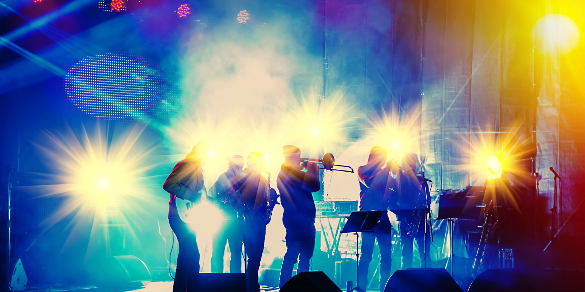

Jazz Festival
The Dubai Jazz Fest is a highly awaited annual event that takes place at the Dubai Media City Amphitheatre. For nearly two decades now, the festival has successfully drawn internationally acclaimed artists to perform in Dubai. Popular names like Mariah Carey, John Legend, James Blunt, Macy Gray and Ruby Turner have previously set the stage on fire with epic live performances and some of the greatest hits in the history of music. Held each year at the end of February this excellent music festival attracts thousands of music fans from around the globe. Hosted at Dubai’s Media City the event runs for three days and visitors can enjoy some fantastic performances from some big names from the jazz world. There’s also many other artists and bands performing that aren’t strictly jazz but the line up each year is impressive.
Film Festival

Every year, the Dubai International Film Festival brings to the city some of the biggest stars from around the globe and screens much-anticipated international and Arabic films. This has become one of the city’s staple events and has residents and visitors counting down the days for its beginning. DIFF 2016 hosted A-listers such as Maria Bravo, Eva Longoria, Melanie Griffith, Anastacia and more. The Dubai International Film Festival (DIFF) is the leading film festival in the region. Since its inception in 2004, the festival has served as an influential platform for Arab filmmakers and talent at an international level, by spearheading the cinema movement in the region
Shopping Fesitval

Dubai Shopping Festival is an annual month long event put together by the Dubai Festivals & Retail Establishment (DFRE), which is a part of Dubai’s department of tourism. During the festival, shops offer discounts on their merchandise, daily car raffles and prize drawings are held to win items such as gold and cars, and there is a fireworks display. There are also a range of family activities and live shows that take place throughout Dubai. The festival was originally constructed to attract increases in the retail trade industry in Dubai, United Arab Emirates, but was later promoted as a tourist attraction.The first Dubai Shopping Festival in 1996 attracted more than one and a half million people who spent over of 500 million dollars during the one month event. These statistics have since grown, with more than three million people attending the festival and over 2 billion dollars being earned at the Dubai Shopping Festival in 2009.The Festival industry has been a big contributor in Dubai’s economy, helping to stimulate tourism and the retail market. In the most recent festival from 2018-2019, over 700 brand names and 3000 stores will have participated. Multiple world records have been set in Dubai during the Dubai Shopping Festival. In 1999, the world's longest gold chain and sofa as well as the biggest chair, stationary bicycle, and mattress were shown at the festival.In 2001, the largest incense burner, shopping bag, and bowl of biriyani were displayed at the festival. In 2002, the largest entry visa in size was issued, along with the showcase of the largest magazine and box of chocolates. In 2004, the largest shopping cart and calendar, as well as the longest buffet were displayed. In 2006, the festival was postponed, and later cancelled due to the death of Dubai's ruler, sheikh Maktoum bin Rashid Al maktoum. In 2013, Dubai Metro held the first fashion show that took place on a moving train as a part of the DSF festivities.